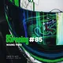
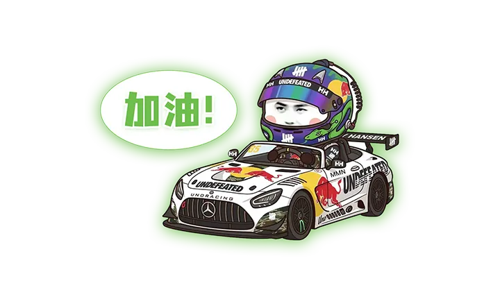

word
/wɜːd/
n. 单词；话语
n.
⭐
关闭
全文英文翻译
关闭
管理员
管理员登录
登录
登录后可上传内容并同步给同一站点的访问者；未登录时仍可正常浏览和本地使用。
已登录
上传到首页语音
同步到语音
上传到追剧学习
同步到追剧学习
上传到热门视频
同步到热门视频
上传到新闻
同步到共享新闻
开启删除模式
开启后，语音、视频和新闻卡片会显示删除按钮。
退出管理员

XX学习站
追剧学习
热门视频
四六级词汇
NEWS
追剧学习
热门视频
NEWS
XX语音
追剧学习
热门视频
视频播放
▶
隐藏字幕
学习站

XX粉丝学习专区
CET4
CET6
文章默写
收藏夹
四级词汇 CET4
未学
已学
熟练
全部
排序：
默认
A→Z
Z→A
乱序
共0词
全选本页
已选
0
拼写
识词
四级练习
1/10
it
美
[ɪt]
文章默写
已默
待默
全部
文章
0
篇
默全文
听写
默全文
全部单词：
0
个
已默写正确：
0
个
错误单词
保存进度
重置
我的收藏
收藏句子
收藏单词
句子听写
0/0
提示
提交
下一题
+ 点击添加追星banner
Star Journey
With You
0
Days
Set My Fan Debut Date for XX
打卡日历
今日心情
Happy
Wronged
Cry
Sad
Try
Speechless
Tired
Joy
Dark
Broken
学习进度
+ 单词banner
0
/
0
熟练单词
+ 文章banner
0
/
0
已默文章
✕
暂无
☀️
☁️
🌧️
⛈️
0/1000字
保存
生成海报
调整图片
缩放
拖动图片调整位置
取消
确认裁切
NEWS
添加 NEWS
NEWS 详情
00:00
00:00
中
▶
0.8
幕
六级词汇 CET6
未学
已学
熟练
全部
排序：
默认
A→Z
Z→A
乱序
共0词
全选本页
已选
0
拼写
识词
六级练习
1/10
it
美
[ɪt]
首页
学习站
我的
四级拼写
1/10
中文释义
/wɜːd/
n. 单词
熟练
下一题
六级拼写
1/10
中文释义
/wɜːd/
n. 单词
熟练
下一题